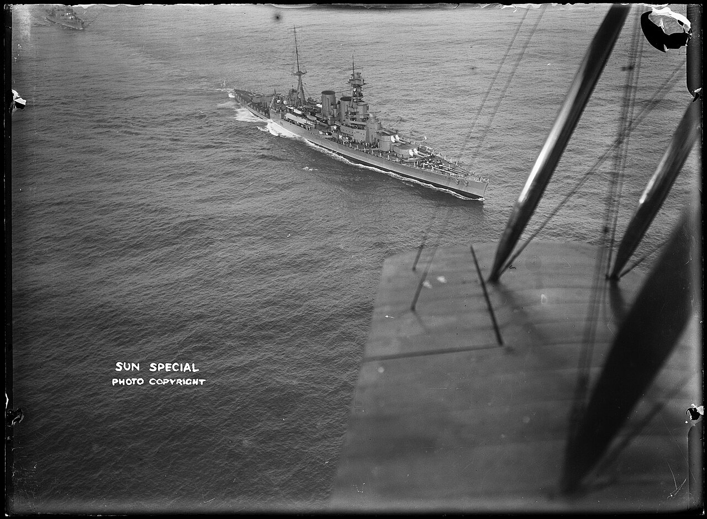

HMS Hood
Orgullo de la Royal Navy y el mayor crucero de batalla jamás construido por Gran Bretaña, hundido por el Bismarck en el Estrecho de Dinamarca.

Una carrera de dos décadas
Entró en servicio en 1920. Antes de la Segunda Guerra Mundial realizó despliegues y el crucero mundial de 1923–1924.
Diseño y evolución
Combinaba velocidad y artillería pesada. La documentación de la asociación separa maquinaria, protección, armamento y alojamiento.
Pérdida y memoria
Se hundió el 24 de mayo de 1941 durante el enfrentamiento con Bismarck y Prinz Eugen. La asociación conserva documentación y memoria de quienes sirvieron a bordo.
Tripulación y vida a bordo
La dotación cambiaba entre paz y guerra. Los espacios de la marinería servían para comer y dormir, mientras que los oficiales disponían de camarotes. Cocinas, panadería y ventilación formaban parte de la infraestructura necesaria para sostener la vida diaria.